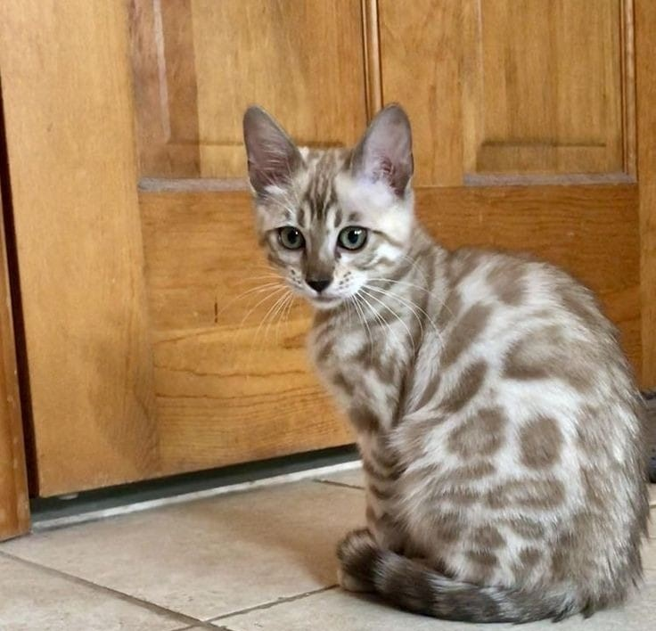
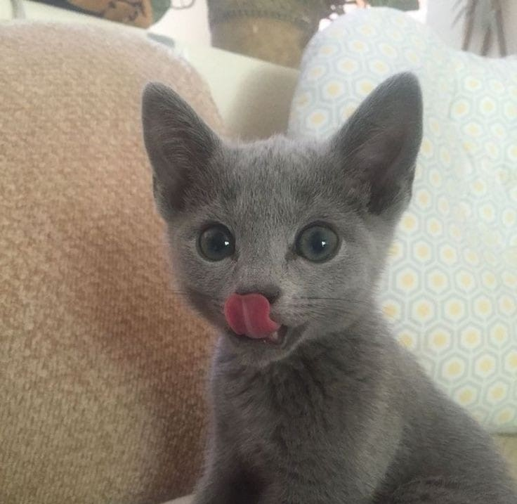

Animales en adopción
Sofia
Gatita hembra, 3 meses de edad. Cariñosa y juguetona.
Adoptar

Max
Perrito macho, 3 años de edad. Es hiperactivo e imita a las personas.
Adoptar

Rufus
Perrito macho, 1 año de edad. Juguetón y guardián.
Adoptar

Luna
Gatita hembra, 2 años de edad. Le encanta acostarse en ropa ajena.
Adoptar
Lola
Perrita hembra, 1 mes de edad. Le encanta perseguir a las personas.
Adoptar

Irela
Gatita hembra, 5 meses de edad. Dormilona y tranquila.
Adoptar
Jasper
Gatito macho, 4 años de edad. Ama mirar por las ventanas.
Adoptar

Oliver
Perrito macho, 4 meses. Ama ir al parque.
Adoptar

Leo
Gatito macho, 7 meses. Es muy compañero.
Adoptar
Simba
Perrito macho, tiene 6 meses de edad. Es tímido.
Adoptar
Coquito
Perrito macho, 1 año y medio. Le encanta jugar con su pelota.
Adoptar
Cleo
Gatita hembra, 4 meses de edad. Le encanta estar a upa.
Adoptar